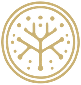

De dónde viene
- Especie
- [pendiente]
- Parte usada
- [pendiente]
- Procedencia
- [pendiente de documentar]
- Análisis del lote
- [pendiente]
Hay curiosidades que echan raíces. La tuya te ha traído hasta los hongos funcionales.

La ciencia despierta preguntas. La naturaleza invita a sentir. El ritual abre un espacio para conectar. Elige por dónde empezar.
O sigue explorandoUn hongo no es solo lo que se ve. Lo que se usa, cómo se prepara y qué se ha estudiado cambian según la parte.
Antes de ser polvo fue una red que creció despacio, un cuerpo que salió a la luz, una cosecha. Este es su camino.
Hay momentos que piden volver.A tu ritmo.A tus sentidos.A ese espacio que también es tuyo.
Preparar una bebida caliente puede ser una pausa. Lo que hagas con ese momento es tuyo.
¿Tienes dudas antes de elegir? Escríbenos y te respondemos con calma.
Este acompañamiento no sustituye la consulta con un profesional de la salud.